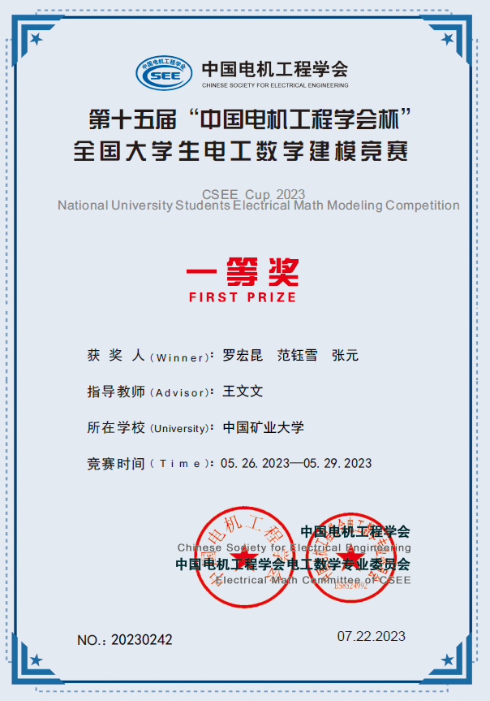
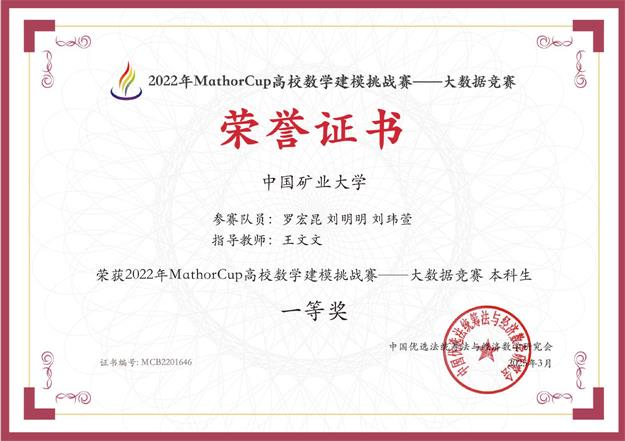
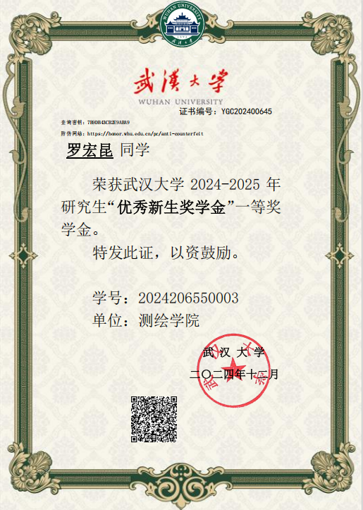
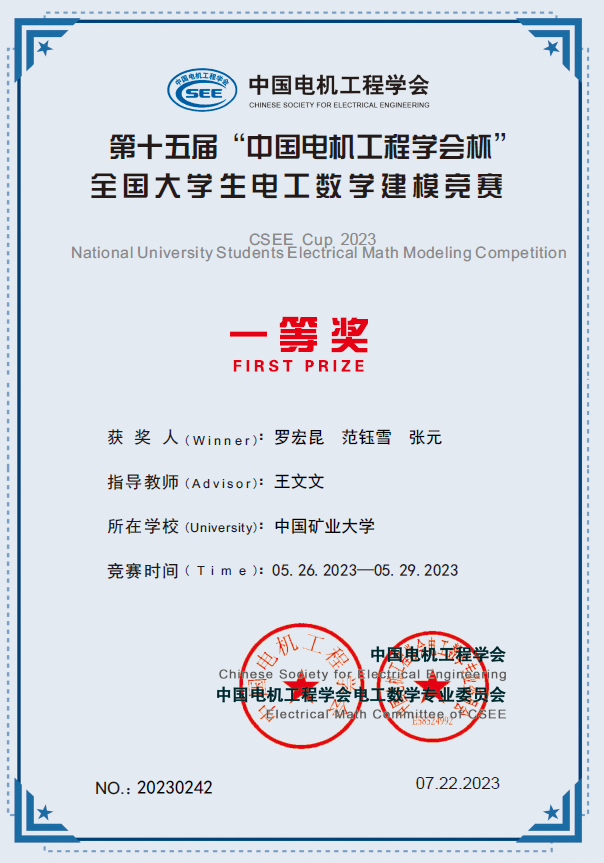
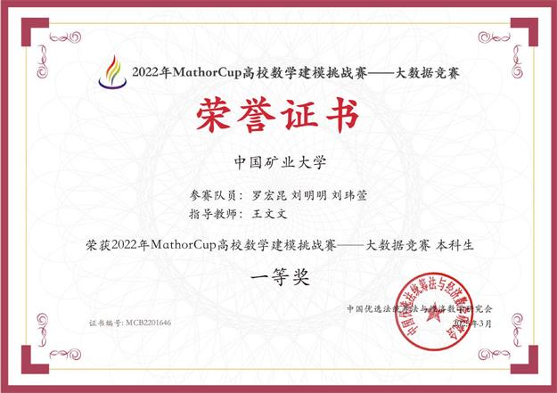
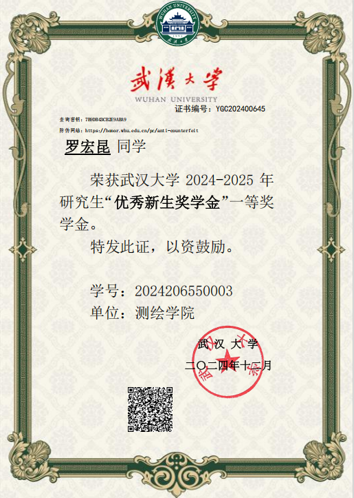

|
My name is Hongkun Luo 🤖 罗宏昆 🤖 In June 2024, I
graduated from China University of Mining and Technology with a
bachelor's degree, under the supervision of Professor Zengke Li. I am a master candidate
from Luojia
Laboratory , School of Geodesy and Geomatics(SGG), GNSS Research Center of Wuhan University, co-supervised by
Professor Chi Guo and Professor Weiwei Song. (seeking Ph.D.
opportunities for Fall 2027)
In June 2024, I
graduated from China University of Mining and Technology with a
bachelor's degree, under the supervision of Professor Zengke Li. I am a master candidate
from Luojia
Laboratory , School of Geodesy and Geomatics(SGG), GNSS Research Center of Wuhan University, co-supervised by
Professor Chi Guo and Professor Weiwei Song. (seeking Ph.D.
opportunities for Fall 2027)
📌 I'm always open to new ideas and collaborations! You can reach me through email or any of my social media accounts.  https://luohongkun.top/
https://luohongkun.top/
 https://github.com/luohongk
https://github.com/luohongk
 QQ:2638923243
QQ:2638923243
 wechat:luohongkun-0715
wechat:luohongkun-0715


 Gmail:luohongkun0715@gmail.com
Gmail:luohongkun0715@gmail.com
 Email:luohongkun@whu.edu.cn
Email:luohongkun@whu.edu.cn
 X: luohongkun0715
X: luohongkun0715
|

|

|
 Last Update Time: 2025.11.25 | Updated bimonthly
Last Update Time: 2025.11.25 | Updated bimonthly
- 🌟 You can fill out the form below to apply for the free consultation for students from disadvantaged groups.📋 Apply for Consultation
- 🌟 I'm interested in intelligent agents, particularly in the intersection of vision-language interaction and lifelong autonomy.
- 🌟 My current focus also includes both end-to-end and stage-wise end-to-end learning algorithm.
- 🔬3D Visual Reconstruction (Gaussian Splatting,VGGT......): for building efficient and accurate scene representations.
- 🔬AI-based Localization and Perception: including visual place recognition, multi-sensor fusion, map-based reasoning.
- 🔬Vision-Language Navigation and Action:connecting natural language with spatial behaviors.
 News
News
-
[2025-11]
 I received the National Second Prize (Top 3%) in the Huawei Cup Postgraduate Mathematical Modeling
Competition.
I received the National Second Prize (Top 3%) in the Huawei Cup Postgraduate Mathematical Modeling
Competition.
-
[2025-11]
[PDF]I received
the Outstanding Master’s Student honor at Wuhan University.
-
[2025-11]
[Video]
I successfully completed the full deployment of my VLN system — an independently finished project that
enables navigation directly through Chinese language instructions.
-
[2025-10]
I have
launched a monthly free consultation program, primarily aimed at students facing difficulties in their
specialized fields.Apply
-
[2025-10]
I was
honored to be a National Scholarship candidate for Postgraduates. Thanks for this precious chance to show
myself.
-
[2025-10]
[Cert.]I was invited to serve as a reviewer for IROS 2025 Workshop,
and this is my first time serving as a reviewer for IROS.
-
[2025-10]
[PDF]I was
awarded the First-Class Academic Scholarship at Wuhan University.
-
[2025-10]
[Cert.]I was invited to serve as a reviewer for ICRA 2026, and this
is my first time serving as a reviewer for ICRA.
-
[2025-10]
[PDF] I released our paper submitted to the
2025 Huawei Cup Graduate Mathematical Modeling Competition.
-
[2025-09]
 I was awarded the title of Outstanding Guest Editor by Satellite Navigation .
I was awarded the title of Outstanding Guest Editor by Satellite Navigation .
-
[2025-09]
 I was invited to join an innovative tech startup as a Technical Advisor and Co-Founder.
I was invited to join an innovative tech startup as a Technical Advisor and Co-Founder.
- [2025-09] I received a research internship offer from the IDEA Research Institute of Digital Economy in the Guangdong-Hong Kong-Macao Greater Bay Area .
-
[2025-08]
[Video]
I successfully deployed a VLA-based VLN framework, with the deployment demonstrated in video.
-
[2025-08]
[Link] I attended the 6th Annual Conference of China Robotics Society
(CCRS 2025), themed “Human-Robot Integration, Intelligent Future,” held in Changsha, China.
-
[2025-07]
[Link] I was selected by The China Antarctic Research Center for Surveying and Mapping at
Wuhan University for the 2025 Yulong Snow Mountain Glacier Expedition in Yunnan. Though I couldn't join due
to a time conflict, I'm grateful for the opportunity.
-
[2025-07]
[Cert.] I was selected as a summer camper for the
2025 Spatial-Temporal Information and Ecological Restoration International Summer School . at China
University of Mining and Technology.
-
[2025-07]
[Link]
I served as an Academic Reviewer for IEEE RA-L.
-
[2025-04]
I served as a Teaching Assistant for the "Artificial Intelligence and Machine Learning" course for the Class
of 2023, Intelligent Navigation Major, at Wuhan University.
-
[2025-03]
My paper SuperVINS was accepted by IEEE Sensors Journal!
-
[2024-12]
I won the first-class scholarship for freshmen masters at Wuhan University ([Cert.]) .
- [2024-11] I had taken on the role of student editor for the SCI (Satellite Navigation) .
-
[2024-10]
I won the first prize of the Jiangsu Province Surveying and Mapping Geographic Information
Undergraduate Excellent Graduation Thesis Award.
-
[2024-06]
I won the title of outstanding graduate of China University of Mining and Technology,a distinction that
reflects my alma mater’s acknowledgment of my four years of undergraduate study.
-
[2024-06]
 I graduated from China University of Mining and Technology —a
prestigious century-old institution renowned for its rich history and beautiful campus.
I graduated from China University of Mining and Technology —a
prestigious century-old institution renowned for its rich history and beautiful campus.
-
[2023-09]
I received Chinese National Scholarship.Only 0.2% of Chinese undergraduates can receive this award.
-
[2023-08]
 I participated in the NanJing University International Summer.
School with the theme “From the Center of the Earth to the
Deepest Point of the Universe”.
I participated in the NanJing University International Summer.
School with the theme “From the Center of the Earth to the
Deepest Point of the Universe”.
 Education & Visiting
Education & Visiting

|
🏫Location: WuHan, China; School level: 985,211 👨🏻‍🎓Master of Geodesy and Surveying Engineering. 🕒Sep. 2024 - Jun. 2027, Supv.: Prof. Chi Guo,Prof. Weiwei Song |

|
🏫Location: NanJing, China; School level: 985,211 👨🏻‍💻Participate as a summer school member. 🕒Aug. 2023, [News][Certificate] |

|
🏫Location: XuZhou, China; School level: 211 👨🏻‍🎓Bachelor of Surveying and Mapping Engineering. 🕒Sep. 2020 - Jun. 2024, Supv.: Prof. Zengke Li, [Score] [Transcript] |


 Papers & Projects
Papers & Projects

|
📑SuperVINS: A Real-Time Visual-Inertial SLAM Framework for Challenging Imaging Conditions 👨🏻‍🎓Hongkun Luo* , Yang Liu , Chi Guo†, Zengke Li , Weiwei Song 🚀 IEEE Sensors Journal JCR Q1 CAS Q2 IF: 4.5 |

|
📑Accurate Identification and 3D Reconstruction of Surrounding Rock Fractures 👨🏻‍🎓Hongkun Luo*, Xiangyu Zhang , Xiang He 🚀HUAWEI CUP 2025 Second Prize(92/3086;rank:2.9%) |

|
📑The Wordle Game Analysis Model 👨🏻‍🎓Hongkun Luo*, Yuzhu Zhang , Jiale Chen 🚀MCM/ICM International Competition |
|
🛠️Deployment of VLA-Based VLN (NaVILA) 👨🏻‍🎓Hongkun Luo*, Wenjie Jiang, Yuanyuan Zhu 🚀 RSS 2025 Successfully Deployed on Humanoid Robots |
 [PDF]
[PDF] [Code]
[Code] [Project
Page]
[Project
Page]
 [Video]
[Video]
![[Cert.]](../images/IROS_review.png){kind=link}
![[Cert.]](../images/ICRA_review.png){kind=link}
![[Cert.]](../images/CUMT_summer_school.png){kind=link}
![[Certificate]](../materials/NJU_summer.jpg){kind=link}
Industrial Experience

|
🏠 IDEA(International Digital Economy Academy) 🕒Sep. 2025 - Dec. 2025 🌱Robotics Research Center, ShenZhen, China 👬worked with Ph.D. Jiajun Jiang ✨Topic: Map Construction and Understanding,VLN |
 Individual Awards
Individual Awards
🏆2025.11 National Second Prize (Top 3%) in the Huawei Cup Postgraduate Mathematical Modeling Competition(💰4000)
🏆2024-2025 Outstanding Master’s Student in Wuhan University
🏆2024-2025 First Class Academic Scholarship in Wuhan University(10%)(💰4000)
🏆2025.09 The Outstanding Guest Editor of Satellite Navigation
🏆2024.12 The First Class scholarship for Freshmen Masters at Wuhan University(💰5000)
🏆2024.10 The First Prize of The Jiangsu Province Surveying and Mapping Geographic Information Undergraduate Excellent Graduation Thesis Award (5%)
🏆2024.06 Outstanding Graduate of China University of Mining and Technology
🏆2022-2023 National Scholarship for Chinese Undergraduate Students (0.2%)(💰8000)
🏆2023 National Second Prize in Surveying and Mapping Programming Group-Surveying and Mapping Skills Competition
🏆2023 The First Prize of The National Electrotechnical Mathematical Modeling Competition for College Students (5%)
🏆2023 The First Prize of MathorCup Big Data Challenge (5%)
🏆2023 Meritorious Winner-Mathematical Contest in Modeling/Interdisciplinary Contest in Modeling(7%)
🏆2021-2022 Surveying & Mapping Scholarship (sponsored by Nanjing Institute of Surveying, Mapping and Geotechnical Investigation Co., Ltd.) (💰4000)
🏆2021-2022 First Class Academic Scholarship in China University of Mining and Technology(💰4000)
🏆2020-2021 First Class Academic Scholarship in China University of Mining and Technology(💰4000)
 







 Professional Services
Professional Services
⚡️2025.10 An academic reviewer for 🔗IROS 2025 Workshop AIR4S .
⚡️2025.10 An academic reviewer for 🔗ICRA 2026 .
⚡️2024.09-2025.09 An outstanding guest editor of 🔗Satellite Navigation.
⚡️2025.09-Now A technical advisor and co-founder of a tech startup company.
⚡️2025.07-Now An academic reviewer for 🔗IEEE RA-L .
⚡️2025.04-2025.07 A teaching assistant for “AI and ML†Class of 2023, Intelligent Navigation Major, Wuhan University.
⚡️2024.11-2025.11 A student editor of the academic journal "🔗Satellite Navigation".
🤜🤛 Friends & Collaborators
🔔 I offer free professional consultation to one undergraduate or graduate student in Surveying, GIS, Remote Sensing, or Navigation in China each month. The focus is on students from disadvantaged groups in these fields. Only one student will be selected each month. If you'd like to apply, please fill out the form below. 📋 Apply for Consultation
💡 I truly enjoy connecting with outstanding peers and young researchers, and I sincerely appreciate the inspiring opportunities to exchange ideas and collaborate with the following friends. If you’d like to connect or have a discussion, feel free to reach out via 📧 Email or schedule a ☕️ Coffee Chat.